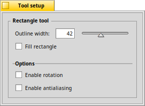
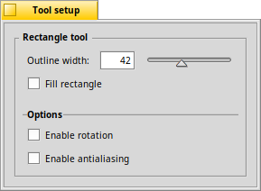

The rectangle tool
|  |
This tool creates a rectangle. With the you choose how to draw the rectangle: and you get to rotate the rectangle after you've drawn it. to avoid jagged edges. |
Back: The straight line tool Next: The ellipse tool
|  |
This tool creates a rectangle. With the you choose how to draw the rectangle: and you get to rotate the rectangle after you've drawn it. to avoid jagged edges. |